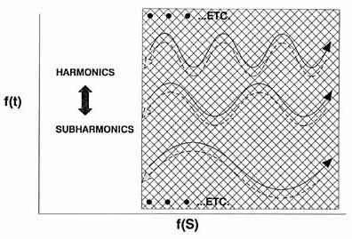
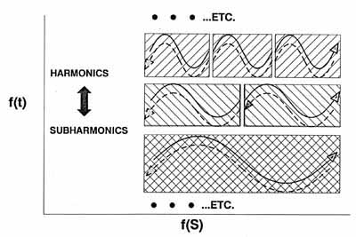

|
The
Tom Bearden Website |
|
|
|
The
Tom Bearden Website |
|
|

|
THE FINAL SECRET OF FREE ENERGY ã 1993 T. E. BeardenA.D.A.S. P.O. Box 1472 Huntsville, AL 35807 February 9, 1993 Foreword This paper contains the real secret of tapping the vacuum energy very simply, using almost any source of potential (battery, electrostatic generator a la Swiss electrostatic device (the Testatika), elevated wire wire/250 V/m in the earth/ionosphere potential, etc). The objective is for the moderately technical reader to understand how to build and understand not only a single device, but also hundreds of different kinds of them. While it is quite simple, the "magic principle" contained in this paper only took me some 30 years to discover. The precise definitions necessary to understand the free energy rationale are included. Also included are some very simple pseudo equations for the process. Do not underestimate these simple pseudo equations -- they tell the tale that's needed. Also, there has been little or no time to "dress up" the paper. It's simply written down very informally, to get the necessary points across. Nearly everything fundamental that we've been taught about EM energy is wrong or incomplete. Even the definition of energy in physics is wrong! Let me summarize a few of the things that are wrong with the classical electromagnetics (CEM) model as follows: CEM is still utilizing a model based on a material ether. Although the Michelson-Morley experiment destroyed the material ether assumption in 1887, the classical EM model has never been corrected. It also contains no definition of charge, and no definition of potential. In many cases, algorithms to calculate a magnitude are boldfacedly and erroneously advanced as "definitions." CEM still prescribes the force fields as the causes of all EM phenomena; it has been known since 1959 that forces are effects and not causes, that EM force fields exist only in and on the charged particles of mass in the physical system, and that the potentials are the primary causes of EM phenomena. The lack of definitive definitions of mass and force in mechanics is carried over into EM theory; there is no adequate definition of EM force or of EM mass. The magnitude of the electrical charge on an electron is not quantized. Instead, it is discretized, being a function of the magnitude of the virtual photon flux (VPF) exchange between the vacuum and the charged particle. When the charged particle is placed in a potential that differs from ambient, then the magnitude of the VPF -- and hence the magnitude of the electric charge on the electron -- is altered. The CEM assumption of an "empty vacuum" is totally falsified by modern quantum mechanics. The CEM notion that EM force fields and force field waves exist in vacuum is totally false. Only potentials and potential gradients exist in the vacuum. EM waves in vacuum are not force field waves as CEM prescribes; instead, they are oscillations of potentials and potential gradients. Potentials have a bidirectional EM wave-pair structure, where the bidirectional wave pairs are phaselocked in a harmonic series. In each wave pair, photons and antiphotons are continually coupling (into spin-2 gravitons) and decoupling. This is where gravitation and electromagnetics are unified. The CEM notion that singular EM forces exist in either matter or the vacuum is false; Newton's third law requires that all forces exist in oppositive pairs. Not a single one of the equations universally taught as "Maxwell's equations" ever appeared in any book or paper by James Clerk Maxwell; instead, they are Oliver Heaviside's equations. Maxwell's actual theory was written in quaternions, which is a complete system of mathematics. The Heaviside/Gibbs vector version (1) has a lower topology, (2) is not a complete system of mathematics, and (3) actually captured only a subset of Maxwell's actual theory. Tensor theory does not recapture that which was lost. There are even more errors in CEM, but these should suffice to make the point: Classical electromagnetics theory is seriously flawed, with archaic foundations, riddled with errors, and it should be completely redone. Until this revamping of CEM is accomplished, the present model solidly blocks free energy, antigravity, a unified physical field theory, and a unified theory of mind and matter interaction. A second paper this year will detail the exact long-term causative mechanism for cancer and leukemia, and the exact mechanism for essentially 100% cure of terminal tumors in laboratory animals, demonstrated by the Priore team in France in the late 1960s and early 1970s. The same mechanism can be used to cure AIDS. Throughout the world, humankind is suffering. In the poor populations of the world, early death is the norm, as is frequent famine. One third of the human race goes to bed hungry each night. Protein starvation of children is common. One third of the human race is infected with worms. Many other diseases ravage the far-flung poor peoples of the world. They have little or no industries. They have no abundant electrical power. They have little education, and little modern knowledge. They have little or no medical treatment. In short, they are born without hope; live in misery, filth, disease, and poverty, and die without dignity. Meanwhile, the factories, cities, and enclaves of the "developed and developing" worlds belch forth fumes, toxic and hazardous wastes, and pollutants. They also spew forth weaponry which for one reason or another is used to arm the poorer nations, for use in destroying themselves and their impoverished neighbors. Warfare, terror, banditry, despotism, and all the four horsemen of the Apocalypse are truly loosed in the earth. We simply must do better than that. And we can do better than that! But to do better, we've got to make the basics available to impoverished nations, cheaply and easily. Primary among their needs are energy and medical treatment. Given those, populations can be stabilized, people educated, development begun, and the living standard drastically elevated. So that is the immediate goal. In this paper, I am freely giving away what required me an arduous 30 years of my life to discover. Shortly we will also detail the new methodology for a new therapeutic science, hopefully to cure the diseases that ravage humanity. God willing, this paper will trigger a thousand, or even ten thousand, scientists and engineers to develop overunity energy devices. If so, shortly we can rid our biosphere of noxious automobile and factory exhausts, radioactive nuclear wastes, and massive oil spills. We can remove many of the hydrocarbon combustion pollutants from the air, stop acid rain and the destruction of our forests, and stop the steady rise of carbon monoxide in our air. If that truly tends toward a "Greenhouse" effect, then we can halt that effect as well. The Creator has always given us bountiful free electrical energy, everywhere, easily and readily for the simple taking. It has only been our own blindness and folly that have prevented us from seeing and using this free energy bounty. So here is the final secret of abundant, free electrical energy. Please use the knowledge well and see that its benefits also accrue to those impoverished ones who need it so desperately. Remember the adage, "Inasmuch as you have done it to these little ones..." This is for those little ones. You are our brothers and sisters. We want you to live. And we want you to have a better quality of life, not just bare existence. We care. Tom Bearden February 9, 1993
THE FINAL SECRET OF FREE ENERGY ã T. E. Bearden 1993Some Definitions The Quantum Mechanical Vacuum: First we need some definitions. We start by assuming the quantum mechanical vacuum. 1 Empty "spacetime" is filled with an incredibly intense flux of virtual particles. It is a plenum, not an emptiness. We shall be interested only in the fantastic flux of virtual photons, for we are discussing electromagnetics.Energy and Potential: Energy is any ordering, either static or dynamic, in the virtual particle flux of vacuum. EM energy is any ordering, either static or dynamic, in the virtual photon flux (VPF) of vacuum. That is, for a particular kind of "field" energy, we simply choose the so-called quantum particle of that field, and consider only that kind of virtual particle flux. Potential is any ordering, either static or dynamic, in the virtual particle flux of vacuum. Hey! That's exactly the same definition as energy. Quite correct. Energy and potential are identically the same. Neither is presently defined correctly in physics. Energy is normally defined as "Energy is the capacity to do work." That's totally false. Energy has the capacity to do work, because work is correctly defined as the dissipation (disordering; scattering) of energy (order). The scattering of energy is work. It is not energy! I.e., energy is not definable as its own scattering! Look at it this way: A man has the capacity to catch fish. That is true, but it is not a definition, since a definition must in some sense be an identity. You cannot say that a man is the capacity to catch fish! That may be a submitted definition, all right, but it is false. Similarly, energy has the capacity to do work; that is one of its attributes. But energy IS the ordering in the VPF (we are referring from now on primarily only to EM). Scalar and Vector Potentials: The scalar potential is any static (with respect to the external observer) ordering in the VPF of vacuum. The vector potential is any dynamic (with respect to the external observer) ordering in the VPF of vacuum. We shall be interested in the electrostatic scalar potential. So it is a static ordering -- a stationary template -- in the VPF of vacuum, much as a whirlpool is a stationary ordering (template, form) in the rushing flow of a river. The Scalar Potential Has An Internal Structure The Structure of the Scalar Potential: According to rigorous proofs by Whittaker 2 and Ziolkowski,3 any scalar potential can be mathematically decomposed into a harmonic series of bidirectional wave pairs. Figure 1 shows this Whittaker/Ziolkowski (WZ) structure. In each pair, the forward-time wave is going in one direction, and its phase conjugate (time-reversed) replica wave is going in the other. According to the so-called distortion correction theorem4 of nonlinear phase conjugate optics, this PCR wave must precisely superpose spatially with its partner wave in the pair. The two waves are in-phase spatially, but 180 degrees out of phase in time. The wave is made of photons, and the antiwave (PCR wave) is made of antiphotons. It follows that, as wave and antiwave pass through each other, the photons and antiphotons are coupling and uncoupling with each other, because the antiphoton is a PCR photon, and PCR's precisely superpose spatially with their partner. A photon or antiphoton has wave characteristics, because it has a frequency; if the wave aspects are perfectly ordered and perfectly correlated, then so are the photon's particle aspects.A Potential Is An Ordering Across the Universe: So we have -- astoundingly -- perfect VPF inner ordering infolded in the electrostatic scalar potential! We also have perfect wave/antiwave ordering infolded in there. When you collect a simple set of charges on a small ball or in a region, the scalar EM potential from that set of charges reaches across the universe. In it you have an infinite harmonic series of phase-locked time-forward EM waves going out from the charges to all distant points of the entire universe. And you have an infinite harmonic series of phase-locked time-reversed EM waves coming from all points of the universe, back to the "collected charges" source. A Potential Is A River of Energy: The point is, you have established a mighty, hidden, 2-way river of energy between that collection of charges and every other point in the universe. There is infinite energy in each of those infolded waves and antiwaves. But in a localized region, the energy density in each wave is finite. Since in finite circuits the potential interacts with a localized set of mass, we shall be concerned with the local energy density (joules/coulomb) of the potential. But forget the conventional myth of visualizing the potential as pushing a unit charge in from infinity "against the force field" -- there isn't any force field in the vacuum, as is well-known in quantum mechanics. Also, Newton's third law requires all forces to occur in pairs -- each pair consisting of a force and its 3rd law reaction force. From that viewpoint alone, there is no such thing as an EM forcefield or force field wave in the vacuum. There are just gradients of the vacuum potential present in the vacuum. In the vacuum, an EM wave is actually a wave of the phase locked gradients of the electrostatic scalar potential and of the magnetostatic scalar potential. And each such gradient wave is simultaneously accompanied by its phase conjugate gradient wave, because of Newton's third law. Newton's third law requires forces to occur in pairs of equal but antiparallel forces. Both wave and antiwave co-exist simultaneously in the vacuum EM wave. 5 Therefore it's a stress potential wave, not a force field wave. It's more like an electromagnetic sound wave,6 and so it is a longitudinal wave, not a transverse wave. In the EM vacuum wave's interaction with matter (the so-called "photon" interaction), the wave normally half interacts with the electron shells of the atom, giving translation forces, while the anti-wave half interacts with the atomic nucleus, giving the Newtonian 3rd law reaction (recoil) forces (waves). The EM wave in vacuum is an electrogravitational wave.Energy Is Internally Infinite and Unlimited: A static potential -- which is identically excess energy -- is internally dynamic and infinite. Energy is internally infinite and unlimited! But it has a finite energy density in a local region of spacetime. Since energy interacts with matter locally, we shall be concerned with the local energy density (joules per coulomb). A Principle of Great Importance: The only way you can have a "chunk" or finite amount of energy to dissipate in a circuit as work is to first have a potential's local energy density interact with a local finite mass collector. The normal interacting mass collector is the free electrons (the free electron gas) in the circuit. You can have, e.g., (joules/coulomb x coulomb); (joules/gram x grams); (joules/m 3 x m3); etc.Voltage, Force, Potential Gradients, Loads, and Work: Now let's look at circuitry aspects. Conventionally they are a mess. Voltage is "essentially" defined as the "drop in potential." In other words, it's the dissipation (disordering) of a "finite amount" of potential gradient. But the only way you can get a "finite amount" of infinite energy/potential gradient is by first interacting the potential gradient's internal, finite, excess energy density with a finite "collector" mass. E.g., (joules/coulomb available for collection) x (coulombs collecting) = excess joules collected on the interacting coulombs, available for dissipation. So voltage is really the dissipation of a finite collection of excess EM energy/potential gradient. The dissipation of potential or of its gradient is not potential! You cannot logically define either potential or energy as is own dissipation! We presently use the notion of "voltage" in two completely contradictory ways in electrical physics. Here's how we got the confusion: We take a potential gradient (which has a local energy density), and we "collect" it across some charged masses in a locality -- usually the free electrons in the free electron gas in our circuitry. That is, we express the finite energy density of the potential gradient (before collection onto charges) in the local region in terms of energy per coulomb. The potential gradient actually is a change to the ambient potential, and so it contains an excess energy density (the magnitude may be either positive or negative). We then collect this potential (actually this potential density) on a certain number of coulombs, which places tiny little gradients of potential across (coupled to) each free electron. The local excess energy density of the potential gradient multiplied by the amount of collecting mass gives the amount of excess energy collected (on the interacting charges/coulombs). On each collecting particle, that little gradient, together with the coupling particle, constitutes a tiny force. F is not just equal to ma (non relativistic case); instead, F º (ma), where (mass x acceleration) is considered as a unitary, inseparable thing. So that little potentialized electron (that little EM force) moves itself around the circuit. In the load (scatterer), the little potentialized electron (the little force) is subjected to jerks and accelerations, thus radiating energy (shucking its gradient). Since this is done in all directions in the scatterer (load), that gets rid of the gradient, reducing the "little force" (potentialized electron) to zero because the little potential gradient is lost due to radiation.Collecting And Dissipating Energy Energy Dissipation and Collection: Without further ado, we consider the scalar potential's local energy density in terms of joules per coulomb. That is, in a specific glob of charges (i.e., in finite circuits), the amount of energy collected from a potential gradient onto the finite number of charges receiving/collecting it, is equal to the number of joules of energy per coulomb that is in the potential gradient, times the number of coulombs collecting (receiving) the potential gradient. The current is the activated (potentialized) coulombs per second that dissipate their potential gradients during that second. The current multiplied by the time the current flows gives the activated coulombs that dissipated their activation (potentialization) during that flow time. Dissipating, activated coulombs multiplied by the excess energy collected per activated coulomb gives the energy dissipated (the work or scattering done) in the load. We define collection as the connection of a potential gradient (a source) to the charged masses in a circuit element (the element is called the collector), which for a finite delay time does not allow its potentialized free electrons to move as current. In the collector, during this delay time these trapped electrons are "activated" by potential gradients being coupled to them. Technically, that delay time in the collector is known as relaxation time, 7 in the case of the free electron gas8 (in a wire or in a circuit element). A collector then is a circuit element that has a usable, finite relaxation time. During that relaxation time, the trapped electrons are potentialized without movement as current; each collecting/receiving free electron gets a little gradient across it, but no current yet flows. In other words, during this finite relaxation time (collection time), we extract potential from the source, but no current. Thus we extract energy (potential), but no power (which is voltage x amperage). During the relaxation time, we extract from the source only a flow of VPF, which is continually replaced in the source by the vacuum's violent VPF exchange with the source's bipolarity charges. We do not extract power from the battery/source during relaxation time, but we extract free energy density. That free energy density, coupling with a finite quantity of electrons, gives us a collected finite amount of energy. With that background, let's start again, and go through this in a useful "free energy" manner.The Electron Gas. We refer to the conventional model of the free electron gas in a wire. 9 Although the electrons in this gas actually move by quantum mechanical laws and not by classical laws, we shall simply be dealing with the "on the average" case. So we will speak of the electrons and their movement in a classical sense, rather than a quantum mechanical sense, as this will suffice very well for our purposes.When one connects a circuit to a source of potential gradient (say, to a battery), the first thing that happens nearly instantly is that the potential gradient races onto the coupling wire and heads down it at almost the speed of light. As it goes onto the wire, this gradient "couples" to the free electrons in the free electron gas. However, inside the wire, these electrons can hardly move down the wire at all; they can only "slip" once in a while, yielding a "drift" velocity of a fraction of a cm/sec. 10 On the surface, things are just a little bit different. Most of the "current" in a wire, as is well-known, moves along the surface, giving us the "skin" effect. [For that reason, many cables are stranded of finer wires, to provide more skin surface per cm3 of copper, and hence more current-carrying capability per cm3 of copper.]So, initially, little gradients of potential appear on and across each free electron, with a single little Ñf on each electron, and coupled to it. The couplet of [Ñf·me], where me is the mass of the electron, constitutes a small DEe. [This is rigorous; the conventional EM notion that an E field exists in the vacuum is absurd, and it is well-known in QM that no observable force field exists in the vacuum. As Feynman pointed out, only the potential for the force field exists in the vacuum,11 not the force field as such. Or as Lindsay and Margenau pointed out in their Foundations of Physics, one does not have an observableforce except when observable mass is present. 12]. We have stated it even stronger: Not only is F = ma, but F º ma (nonrelativistic case).13 Since no observable mass exists in vacuum, then no observable F exists there either.Force, Coupled Gradients, and Electron Translation Electrons Coupled to a Potential Gradient Move Themselves. The point is, when activated by a "coupled potential gradient," the activated electron moves itself until it loses its activation (its coupled potential gradient). Let me say that again, in a little more detail. Forget the standard notion that a force field such as the E-field causes electrons to move. Also forget the notion that the E-field is given by E = - Ñf. In foundations of physics, those equations are known to be incorrect for the vacuum. EM force fields are known (in QM foundations theory) to be effects, existing only in and on the charged particles, and not existing separately at all,14 or in the vacuum at all.15 Instead of E = -Ñf, in the vacuum the correct equation would be something like this: PE = -Ñf. In this case, we have correctly stated that the potential gradient PE provides the potential for producing an antiparallel E-field in and on a coupling/collecting charged mass, and the magnitude and direction of that potential gradient will be given by -Ñf, if and only if a charged mass particle is first introduced so that it couples to PE.At any rate, the activated/potentialized electron moves itself. The reason is that it constitutes a force. Force º (mass x acceleration) (non relativistic case). So the potentialized/activated electron is continuously accelerating. However, it is prevented from easily moving down the wire directly. To begin to do that, it essentially has to first move to the outer skin of the copper conductor.The Collector: We now consider a circuit element that we called a collector. (It could be a special coil made of special material, a capacitor with doped plates rather than simple conducting plates, or any one of a number of things). The objective is for the collector to be made of special material so that it has a free electron gas whose electrons are momentarily not free to move as current (they continue to move violently around microscopically, but essentially with zero net macroscopic translation) for a finite delay (relaxation) time, while they are settling themselves upon the surface and preparing to move as current. Let's call the electrons NNTE (no net translation electrons) during that finite delay (relaxation time). During that "no-current" delay time, the NNTE electrons become potentialized/activated by the potential gradient impressed across the collector. So at the end of the NNT time, the NNTE electrons are potentialized, and each is of the form [ Ñf·me].The Secret of Free Energy Two Circuits/Two Cycles: We are going to use two circuits and two cycles, as shown in Figure 2: (1) We shall connect a collector to a primary source of potential (to a battery) during the short time that current does not yet flow, but potential does. (In other words, during the relaxation time of the collector, we allow the VPF to flow onto the NNTE electrons of the collector and potentialize (activate) them, but do not yet allow the electrons themselves to flow as current, but only to move transversely in the wiring and collector.) This is cycle one of a 2-cycle process: This is collection of a specific amount of current-free potential gradient -- power-free energy -- off the potential-source (the battery) onto a collector. During the collection cycle/time, current does not and must not flow (we are discussing the ideal case). We are freely "charging up" the collector as a secondary battery/source. (2) At the end of the collection (potentialization/activation) time/cycle in circuit one, the potentialized collector (the charged secondary source) is sharply switched away from its connection to the primary potential source (the battery), and at the same time it is instantly switched into a separate closed circuit with the load. This is important: In cycle two, the potentialized collector (with its finite amount of excess trapped EM energy) and the load are connected in a completely separate circuit, and one that is closed, with no connection at all to the original source of potential (in this case, to the battery). Specifically, this "load and potentialized collector" circuit is completely separate from the primary source; during cycle two the primary source (the battery) is not connected to anything. In other words, all we've taken from the primary source (the battery) is current-free, force-field-free potential gradient. So to speak, we've taken a "chunk of potential gradient" from the source, nothing else. You simply multiply the potential gradient's local energy density (the so-called "voltage", which is really excess joules per coulomb) by the number of coulombs of charge that is "activated" (that "collects" this voltage or excess joules/coulomb) in the collector. Specifically, we have not taken any power from the battery itself, and so we have not done any internal work inside the battery upon its internal resistance, by a "closed circuit electron flow" back into the battery. We have not permitted such a flow. Instead, we are using the activated collector as a temporary, secondary battery. We will utilize this secondary battery in a conventional manner to power the load, which will also kill the secondary battery (dissipate its trapped EM energy). But that will not affect the primary source. The primary source is never used to directly power the load. It is only used as an infinite source of potential gradient (i.e., as an infinite source of energy density). The Standard Power Extraction Circuit The Conventional Circuit: We digress momentarily: In the standard electrical method, the potential source (which is a bipolarity) is connected across the load. This connects both the external load and the internal resistance of the battery itself in series, as the "total circuit load." Electrons then pour through the external load circuit and through the internal battery resistance, from the "electron rich" polarity of the source to its "electron poor" opposite polarity. The scattering of energy in the internal battery resistance is actually doing work to upset the chemistry that is maintaining the battery's charge separation (the bipolarity). In this manner, the source's separation of charges (which is the "gate" furnishing the potential/energy gradient) is being destroyed as the current flows, and this in turn destroys the source of the potential gradient. In other words, normally we, engineers, are trained to kill the bipolarity, which kills the potential source itself! Incredible as it may be, we, engineers and scientists, have been trained to utilize the free "trapped EM energy" furnished by nature through the source, to destroy the source of the energy/potential, with the same vigor as they power the external load! In fact, our teachers simply have never learned any other way to do it except this deliberately "self-destructive" manner! A Waterwheel Analogy Imagine, if you will, a waterwheel that powers a mill, with a sluice gate upstream in a river, that diverts some river water into the sluice carrying water to the wheel when the sluice gate is opened into the river. The diverted water flows down to the waterwheel, turning it, and the spent water is fed back into the river below the mill site. Now what fool would connect a pulley onto the waterwheel, with a rope running from the pulley to the sluice gate, so that when the wheel rotated, part of the rotational power also was utilized to close the sluice gate and shut off the water, stopping the waterwheel? If one did so, when the sluice gate was opened, the waterwheel would rotate only until the sluice gate was closed, shutting off the water. Then one would laboriously have to pay to reopen the sluice gate again, then again, then again. No self-respecting "waterwheel engineer" would do such an unthinkable, insane thing. But that's exactly what we engineers, electrical physicists, and scientists have been trained to do! We have no energy engineers or energy scientists at all; instead, we have all been power engineers and power scientists. We have all been energy source killers! In this paper, we shall try to do better, and rectify "one of the most remarkable and inexplicable aberrations of the scientific mind which has ever been recorded in history," as Tesla called the conventional electromagnetics. 16 By being energy engineers, we shall only have to pay for our energy source once, and then we shall draw as much energy from it as we wish.External Load Power Is Free; Only The Power In The Source Costs Here's the magic secret of free electrical power: The power in the external load is absolutely free, and it always has been free. 17 In any load circuit, the only power you have to pay for, and have ever had to pay for, is the power you incorrectly use to kill your own primary source. The only power that "costs" more effort/dollars is the power erroneously utilized inside the source to "close the gate" and kill the primary source. Your electric power company doesn't pay for any of the collected energy on your load circuits that is dissipated to power your house. Instead, the power company charges you for its own ignorance. It charges you for its insane use of its own freely extracted electrical energy to continually kill the bipolarity in each of its generators, thus continually killing the free electrical source of that generator's energy.18In any electric circuit, we can continue to indefinitely power the external load indirectly from a source, so long as we are not so naive as to use any of the free energy we extract from the primary source to dissipate back inside the primary source itself and shut it off! And we can easily and freely multiply electrical potential. As an example, given a single good source of potential, a hundred radial wires can be connected to the source. The same potential will now appear at each of the ends of the hundred wires. A switcher/collector unit can then operate from each radial line's end, and power external loads, without "loading" the original primary source. This "cascading" can be continued indefinitely. A single power plant, e.g., can power the entire electrical grid of the United States. And a single automobile battery can power a large, agile, electric automobile at highway speeds, with sports car acceleration, with unlimited range, without "refueling," and with no noxious chemical exhaust. Obvious Impacts Environmentalists should immediately see that the chemical pollution of the biosphere by mechanista and processes to obtain energy can be dramatically reduced, to almost negligible levels. There need be no huge oil tanker spills, for there need be no huge oil tankers. There need be no worrisome radioactive wastes from nuclear power plants, or abandoned hazardous nuclear plants when their life is finished, because there need be no nuclear power plants. There need be no noxious exhausts from jet airplanes (which are really what is diminishing the ozone layer and punching holes in it), automobiles, trucks, buses, innumerable coal-fired and oil-fired power plants, etc. The Electronic Smog Problem In fairness we point out that, as the usage of free electrical energy mushrooms, we will be dramatically increasing the low-level EM signal density of the environment, and that too is biologically detrimental. Although beyond the scope of this paper, that cumulative biological damage mechanism has also been uncovered by this author. A formal paper is presently in preparation for presentation in March 1993 at the annual meeting and conference of the Alabama Academy of Science. 19 The paper will also present an entirely new definition of cancer, give its exact long-term cumulative mechanism, and give an exact, scientifically proven mechanism for eliminating cancer, leukemia, and other debilitating diseases such as AIDS. For our purposes here, we simply state that we understand the EM "electronic smog" biological damage mechanism, and how to go about developing a total counter for it. Eventually, we would see a small "counter unit" added to each power unit, alleviating the "electronic smog" problem and preventing biological damage.Only Dissipate Energy From a Collector, Not the Source Completion of the Collection Cycle: But to return to the completion of our collection cycle (cycle one). During collection, we have not extracted power from the source. That is vital. We have not moved the gate through which our source is furnishing free energy. We have not diminished our primary source. From our previous definitions of potential, we have indeed extracted trapped energy from the primary source, because we placed its "local energy density" across a certain finite collector/mass, instead of extracting power (dissipating energy inside the source or battery to spoil its chemistry and deplete its charge separation).
All Energy Is Free Here's the incredible truth. The entire universe is filled with mind boggling free energy everywhere, in the simplest of things. Simply scrape your feet on the carpet, and you will collect perhaps 2,000 "volts" on your body. At that time, hidden EM energy is flowing from every point in the universe to your body, and from your body back to every point in the universe. We know that all macroscopic matter is filled with stupendous amounts of electrical charge. So an incredible river of energy -- a great flux -- is driving every single thing, from the smallest to the largest. Opening a gate to extract trapped EM energy is simple. Just collect a bit of charge, or scrape your feet hard, or comb your hair briskly. All we have to do is not be stupid and close the gate once we've got it opened! God has been most kind. We have nothing but free energy everywhere. All energy is furnished to us freely! It's our own blindness that has made us into energy source killers. All we have to do is open our eyes to the truth of nature's incredible energy bounty. We must just freely collect that bountiful fruit from Nature's tree, instead of chopping down the tree and killing it. Dissipating The Collected Energy The Work Cycle: We focus again on cycle two. Shortly after the now-potentialized collector is connected to the load at the beginning of cycle 2 (the power cycle, or energy dissipation cycle, or work cycle), the potential gradient across the potentialized collector is connected (transferred) across the free electrons in the load circuit. We assume that the material of the collector and the switching time have been designed so that, shortly after switching to the loading/work cycle, the activated/potentialized free electrons in the electron gas in the collector reach the skin of the collector, and are free to move as current. So just after the beginning of cycle two, each of the free electrons in the load circuit now is potentialized and free to move down the wiring. Each potentialized (activated) electron has its own little individual potential gradient across it and coupled to it, due to the overall potential gradient from the collector. Remember, prior to coupling to charges, this potential gradient moves through the circuit at light speed. An EM potential gradient coupled to a charged mass constitutes an EM force field (excess trapped EM energy per coulomb, times the number of collecting coulombs). Now each little free electron with its potential gradient forms a little E-field (force/charge), and that little E-field (force/charge) is free to move. That's all it takes to move (accelerate) the little activated electron's mass through the load (the scatterer). We strongly stress that the potentialized/activated electron moves itself. It doesn't care whether or not the external battery is attached or not. It is its own little motorboat, with its own little engine driving it. As the little potentialized electrons reach the load (the scatterer), they bang and clang around in there erratically. That is, the "scatterer" (load) causes spurious accelerations ("scatterings") of these self-driven electrons. As is well-known, when a charge is accelerated, it radiates photons. What actually happens is that these little "jerked around" electrons shuck off their little potential gradients in the load (in the scatterer, or the "jerker-arounder") by emitting/radiating photons in all directions. Hence the heat that is produced in the load; the heat is just these scattered photons. The theory of calorimetry already states that all the excess energy (on the potentialized electrons) will be dissipated as this heat (scattered EM energy).When all the potentialized electrons have radiated away their potential gradients in the load (scatterer), they are no longer potentialized. The free electron gas is again "quiescent" and no longer potentialized/activated (again, we are talking about "on the average" from a classical viewpoint). Repetition and Review Notice What We've Done: We took some trapped EM energy density (a chunk of potential gradient, a "voltage" before current flows) from the source, by switching that potential gradient (energy density, which is joules per coulomb) onto a collector (containing a certain number of coulombs of trapped charges) where the potential gradient activates/potentializes/couples-to these temporarily non translating electrons. So the finite collector collected a finite amount of excess energy [joules/coulomb x collecting (trapped) coulombs] on its now-excited (activated) free electrons. Then, before any current has yet flowed from the source, we switched that potentialized collector (with its temporarily restrained but potentialized electrons; with their finite amount of excess trapped EM energy) away from the source and directly across the load. Shortly thereafter, the relaxation time in the collector expires. The potentialized electrons in the collector are freed to move in the external load circuit, consisting of the collector and the load, and so they do so. The scattering "shock collisions" due to the erratic electron accelerations in the load shake off the little potential gradients on the conduction electrons, emitting photons in all directions, which we call "heat." In shaking off the photons, the electrons lose their little potential gradients, hence lose their activation (excess EM energy). Rigorously, we have extracted some energy in trapped form, and allowed it to dissipate in the load, "powering the load" for a finite discharge/dissipation time and doing work. 20 Contrary to the conventional electrical power engineering, we have also done this without doing any work inside the source to diminish its ability to furnish potential gradient.What Is Energy In An Electric Circuit? Energy in an Electric Circuit: Here's the principle loud and clear. Energy in an electric circuit involves only the potentialization and depotentialization of the electron carriers in that circuit. 21 It involves only the potential gradient (the joules per coulomb) collected by the circuit to potentialize its electrons, and the number of coulombs of electrons that are potentialized during the collection phase. Electric circuits simply utilize electrons as carriers of "potential gradients," from the source to the load, where these gradients and the activated electrons constitute excess trapped EM energy. In the "shocking/scattering" occurring in the load, the jerking (acceleration) of the electrons causes these activated (trapped-energy-carrying) electrons to shuck off their potential gradients by emitting them as scattered photons (heat).If one is thoughtless enough to allow the primary potential source to remain in the circuit during the "work" phase, then one is using the potentialized electrons to also go back into the primary source and scatter energy from its internal resistance (internal load), thereby disorganizing the organization that was producing the source potential and energy in the first place. If one does that, then all the while one is getting some work (scattering of energy) in the load, one is also steadily getting some work done inside the primary source to steadily destroy it! Literally, one is killing the goose that lays the golden eggs. Continued Operations: But back to our circuit. After we complete one full collection/discharge cycle, we wish to continue producing work in the external load. So we simply switch the collector back away from the load and onto the primary source, collect some more current-free potential, and again independently switch the collector with its repotentialized free electrons back across the load. We can repeat this two-cycle process to potentialize the external load and power it as long as we wish, from a battery or other source of potential, and never take any power at all from the primary battery. We do not need to drain the battery or source at all, in order to power a load, unless we attempt to power it directly. Powering the external load is always free! Nature has been most kind, and we have been most ignorant. You can have all the trapped electrical energy you wish, from any source of potential, for free. You can power all the external loads you wish, for free, by using a collector as a secondary source, and simply shuttling potential between the primary source and the collector. 22 But you cannot have power for free from (in) the potential source. If you allow current flow in your collection cycle, you are depleting the separated charges inside the battery that are furnishing the source potential.The Coal-Fired Locomotive Rigorous Analogy of a Coal-Fired Locomotive. Now here's an exact analogy, to assist in understanding. Imagine a coal-fired train, and a fireman shoveling coal. He has an external load/scatterer of energy (the fire in the firebox under the boiler). He has a primary source of potential/energy (the coal car). No fireman in his right mind would ignite the coal in the chute of the coal bin, to try and get some heat energy into the firebox! [That is, he would not attempt to extract power from the source. Yet that's exactly what all we engineers are trained to do at present.] Instead, the fireman takes out (collects) a finite amount (a shovelful) of coal (trapped energy). Coal per se (the potential gradient) has a certain energy density per unit volume (trapped joules per unit volume of coal) and the shovel (collector) has a certain volume. Accordingly, the shovelful of coal contains a certain amount of trapped joules of energy. In the fireman's shovel (the collector), the energy remains in totally trapped form, as coal not afire and without its trapped energy being dissipated as work. [He doesn't act like a fool and ignite the coal in the shovel either!] He then throws that shovel of coal (collected trapped energy) onto the fire (scatterer), completely separately from the coal bin/source. He continues to repeat his shoveling cycle, and each shovelful of coal added to the fire dissipates additional energy, powering the load. The Free Energy Principle All potential gradient (trapped excess energy density) is free for the taking. 23 The potential is due to the violent VPF exchange between the vacuum and the separated bipolar charges furnishing the source potential gradient. The energy of the entire universe is flowing through that source potential. You can have as much of this internal VPF flux energy (potential) as you wish, as often as you wish, so long as you don't demand current (which is power, or the rate at which the energy is being freed and dissipated). It's really simple. You can have all the trapped energy you wish, from any source. You cannot connect to the source and start to dissipate the energy as power, however, without starting to close the "gate" from which your free trapped energy is coming.In other words, here's the iron rule: If you draw current, you kill the bipolarity gate furnishing the potential gradient (source of energy density). In that case, you kill the source. If you do not draw current, you do not kill the bipolarity gate and you do not shut down the source. In that case, you can continue to "use" it and extract trapped EM energy from it forever. Definitions Again Definitions: I'll put down some simple equations, that may help to explain it more exactly. First we repeat some definitions. Energy is any ordering imposed upon the virtual particle flux of vacuum. EM energy is any ordering imposed upon the virtual photon flux of vacuum. Static energy is an ordering (a template) which is stationary with respect to the external observer. Dynamic energy is an ordering (a template) which is not stationary with respect to the external observer. Potential: Any ordering imposed upon the virtual particle flux of vacuum. Scalar potential is an ordering (template) that is not moving with respect to the external observer. Vector potential is an ordering (template) that is moving with respect to the external observer. The scalar EM potential is any static (with respect to the external observer) ordering imposed upon the virtual photon flux of vacuum. Etc. Note again that energy and potential have exactly the same definition. Potential is in fact trapped energy. Scalar EM potential is static EM energy (to the external observer) or trapped (collected) EM energy. In other words, if one takes off a differential of potential onto a fixed number of coulombs, one takes off a certain magnitude of trapped EM energy. In other words, one takes out a shovelful of coal from the coal car. Importance of Separation of Charges We Must Not Dispel the Separation of Charges In Our Source: The difference in our coal-fired train analogy and our electrical circuit is that, in the coal train, the coal in the coal car is not automatically and continually replenished. Also, the coal in the coal car has already been collected by the mass of the coal car, so it is not infinite. In the electrical circuit, the potential gradient in the primary source is continually replenished, automatically, and it is infinite (though it has a finite energy density). The reason is simple. EM potential (in the normal sense) is actually a virtual photon flux exchange between the vacuum (the entire vacuum, all over the universe) and a charged particle or collection of charged particles. 24 Thus the potential (gradient) is a powerful energy flux, pumped by the vacuum and the entire universe, that continues automatically, so long as we do not allow the collected charges in our bipolarity source to be dissipated. In terms of a battery, we achieved separation of charges inside the battery by chemical action, and we paid for that initially. Once separated, the charges essentially stay separated (because of the chemistry) unless we foolishly do something to dissipate them, such as upsetting the chemistry, so they are no longer separated positive from negative. So if we don't do anything to these separated charges, they continue to be driven by their fierce exchange of virtual photon flux with the vacuum/universe. If we then simply extract some of that flux exchange, without moving the charges, we are directly "gating" trapped EM energy from the vacuum/charged particle VPF exchange.25The Potential Is Infinite And So Is Its Energy Content You Can't Dip The Ocean Dry With a Spoon: Let's say that another way. The charged particles in our potential source are in a constant, seething, equilibrium exchange of trapped EM energy with the entire universe. That energy exchange is so enormous that, if we gate some of it out to collect on some other "temporarily frozen" charges and potentialize/activate them, the vacuum flux doesn't even miss it. It's like dipping a spoonful of water out of the restless ocean. The hole is instantly filled, and the water replenished. We can dip with that spoon as much as we wish, and the ocean will never run dry, but will simply continue to furnish us water, spoonful by spoonful. The same is true in our electric circuits. We can have all the potential (trapped EM energy density) we wish, for free, from a single source, so long as we do not allow work to be done inside the source to close off our "gate" and kill our primary source. The Twisted Concept of Voltage Before We Develop Some Pseudo-Equations: In the equations we wish to develop, we have one problem, due to the lack of insight of conventional electrical physicists. That is, they have insisted upon "measuring" and expressing both the infinite potential (nondissipated) and a certain quantity of potential (dissipated) in volts. So they say "a potential of so many volts." That's nonsense, and totally erroneous. Rigorously, a voltage is a drop or a dissipation of so much (a finite amount of) collected excess potential/energy. You "measure" the voltage in a voltmeter by impressing a potential gradient upon the electron gas in the circuitry, wherein you collect or get in your voltmeter so much [(joules/coulomb) x coulombs]. A tiny current (coulombs/second) from this internal collection then flows for a finite time through the resistance of the voltmeter. So you dissipate (joules/coulomb) x (coulombs/second) x (seconds), which gives a certain amount of energy dissipated as work in moving the needle of the voltmeter. The voltmeter is calibrated so that it effectively indicates the collected energy per coulomb that was dissipated, and it calls that entity voltage. It involves a finite amount of energy that has already been dissipated as work, and it's a measure of the local energy density of the potential in terms of joules/coulomb. It is not a measure of the potential proper. It's after the fact; the extracted (collected) potential gradient it actually refers to existed in the past, before the work (dissipation of the collected trapped energy) was done. To refer to the potential before its dissipation as "voltage" is precisely the same as confusing the future with the past. A "potential (difference) of so many volts" is actually a statement that "a potential difference of so much energy per coulomb" could be dissipated in a load, if it were connected to the load so that a finite amount of energy was collected, and this finite load-collection was allowed to dissipate as power (volts/coulomb x coulomb/sec) for a finite time, yielding work. It's even worse, but it would take a textbook to straighten out this one error in EM theory. So we'll leave it at that, and we'll adapt the notion of potential the way it is corrupted in electrical circuit theory. There it's used not really as energy, but rather as excess energy per coulomb of potentialized charge. I apologize for that difficulty, which is not of my own making, but I must use the conventional notion if we are to greatly clarify the pseudo equations. The Equations of Free Energy The Pseudo-Equations: Let us use the following subscripts and letter convention, and develop the nomenclature needed: T = trapped d = dissipated or dissipating m = translated (moving) K = energy V = volts = potential drop (potential dissipated) = previously collected potential radiated away as heat in a load, doing work on the load in the process. Unfortunately, we shall also have to speak of a potential gradient that is not being dissipated, so we shall have to speak of "trapped volts" which is erroneous, but complies with the common usage. f = electrostatic scalar potential. Coul = coulombsi = amperes = Dissipating potentialized coulombs per second flowing, so amps are something translating, always. Amps are excited coulombs, per second, that are dissipating their excitation. With superconductivity excluded, you only have amps when you have a potential drop across a load. So we will speak of amps as "dissipating," meaning that potentialized electrons are traveling through a load, dissipating their activation (gradients) in the load by radiating scattered photons (heat).n = number of electrons in a coulomb = 6.3 x 10 18 electrons/coulombHere are the pseudo equations (superconductivity is excluded): amp m = could/sec = n electronsm/sec = n electronsd/sec [1] Df = VT (as conventionally referred to). It would be volts if all [2] of it were dissipated, but it is not yet dissipated, so it is sort of "trapped volts". Erroneous, but the common use. So we will speak (somewhat distastefully) of "trapped volts" and "dissipated volts."V d x ampd x sec = watts x sec = power x time = work = Kd [3]V d x could/sec x sec = (work) = Kd [4]In the switching, we switch K T to Kd soK T Þ Kd [5]But V T x coulT = KT [6]Or [V T] = [KT] / [coulT] = trapped energy/trapped coulomb [7][K T] = [VT] x [coulT] = amount of trapped energy, each cycle [8]So that's what we were getting at. The amount of trapped energy you can transfer (in other words, how much coal you get in one shovelful) depends upon the number of trapped electrons you have in the trapped free electron gas in the collector, and the potential gradient you apply to those trapped coulombs to potentialize them. Relaxation Time and Semiconductors Relaxation Time: The time it takes for the free electrons in a conductor (or material) to reach the skin of the wire after potential is applied, is, of course, called the relaxation time. During that time, the free electrons in the gas are "trapped" insofar as producing current (dissipation of the potential) is concerned. However, immediately after the relaxation time ends, current begins and dissipation of the trapped energy begins. In copper, the relaxation time is incredibly rapid. It's about 1.5 x 10 -19 sec. However, in quartz it is about 10 days! So as you can see, we need to get somewhere in between these two values, and so we will have to "mix" or "dope" materials. We must get a sufficiently long relaxation time so that we can switch and collect comfortably in cycle one, then switch into cycle two for dispersion of the freely collected energy in the collector. However, the relaxation time we get must also be short enough to allow quick discharge in the load, as soon as we switch the primary source away from the collector. Actually, we need a degenerate semiconductor material instead of plain copper.Degenerate Semiconductor Material: A semiconductor material is intermediate between a good conductor and an insulator. It's a nonlinear material, and doped. A degenerate semiconductor material is one which has all its conduction bands filled with electrons, and so it thinks it is a conductor. That is, a degenerate semiconductor is essentially a doped conductor, so to speak. As you can see, we can increase the relaxation time in our "conductors" connected to the source by making them of degenerate semiconductor material. What we're talking about is "doping" the copper in the wire, and in the collector, so that we can have plenty of time to collect, and switch, and discharge, and switch, and collect, etc. Now in a doped conductor (degenerate semiconductor), we can tailor the relaxation time by tailoring the doping. We must dope the copper before we make the wire. Why would we wish to do that? We want to overcome the single problem that so far has defeated almost all the "overunity" researchers and inventors. WHEN YOU CONNECT TO A SOURCE, YOU CAN ONLY EXTRACT CURRENT-FREE POTENTIAL -- FREE "TRAPPED EM ENERGY" -- DURING THE ELECTRON RELAXATION TIME IN THE CONNECTING CONDUCTORS AND SUCCEEDING CIRCUIT COMPONENTS. AFTER THAT, YOU'RE STEADILY EXTRACTING POWER, AND THE ENERGY EXTRACTED FROM THE SOURCE IS BEING PARTIALLY DISSIPATED IN THE RESISTANCE/LOADING OF THE CIRCUIT, AND PARTIALLY DISSIPATED IN THE INTERNAL RESISTANCE OF THE SOURCE. IN THE LATTER DISSIPATION, YOU'RE ALSO DISSIPATING YOUR SOURCE BY DOING WORK ON IT INTERNALLY TO KILL IT. Good Copper Wire: Bane of Overunity Inventors: Many destitute inventors, tinkering and fiddling with overunity devices, finally get something (a circuit or device) that does yield more work out than they had to input. At that point, they usually conclude that it's simply the specific circuit configuration and its conventional functioning that produces the overunity work. However, usually as soon as this configuration is more carefully built with very good materials, boom! It isn't overunity anymore. The inventors and their assistants then desperately bang and clang away, getting more frustrated as the years pass. The investors get mad, sue for fraud, or get in all sorts of squabbles. The scientists who tested it and found it wanting, pooh-pooh the whole thing as a scam and a fraud, or just a seriously mistaken inventor. Scratch one more "overunity" device. Most of these inventors got their successful effect (and possibly erratically) when they were struggling with inferior, usually old, usually corroded materials. Actually, the more inferior, the better. The more contaminated/doped, the better! The moment you wire up your circuit with good copper wire connected between the battery or primary source and any kind of load including the distributed circuitry loading itself, you can forget about overunity. You will lose it in the copper, after the first 1.5 x 10 -19 second!Think of a really good conductor such as copper as an essentially linear material. Linear means energy conservative. Overunity can only be done with a highly nonlinear effect. So your "conductors" have to be made of nonlinear materials. In fact, they have to be made of degenerate semiconductor material. For the type of circuitry we are talking about, the copper has to be doped and then made into "doped copper" wiring. You also have to utilize the primary battery only to potentialize a collector (secondary battery/source), and then use this secondary battery source to conventionally power the load while also killing itself. The Wiring And the Collector Must Be of Degenerate Semiconductor (DSC) Material. 26 A good materials scientist/engineer, together with a decent electrodynamicist, can readily design and tailor some doped copper wiring so that the material in the wiring is a degenerate semiconductor material, with a target (desired) relaxation time. That's what you should use to make the wiring to connect up your source to the collector with, and that type of material is also what you use in your collector. You can use either a coil or a capacitor as the collector, but its "conductive" material has to be degenerate semiconductor material -- in short, it must be doped to have the proper relaxation time. From the collector to the load, however, obviously you want to use a good conductor material. Ordinary copper will do nicely there.Once you do that, you're in business. When making the DSC material, simply tailor the relaxation time to something which is easily switched. For example, take one millisec. With a relaxation time of that long, switching is easy. In fact, one could even use good mechanical switching. Or easily use inexpensive ordinary solid state switching, without having to go all the way to nanosecond switching. Then, in the collector, you calculate the number of "trapped coulombs" you have. Take the "trapped voltage" (current-free potential's energy density per coulomb) you extract from the source during the electron relaxation time after the collector is connected. Multiply the number of trapped coulombs in the collector by the trapped voltage during collection, and you have the amount of energy in joules that you extract FOR FREE, without paying for it, from the source during every collection cycle. Sources, Collectors, and Power Tapping Vacuum Energy. You're getting the excess electrical energy directly from the vacuum, as we briefly pointed out above. The vacuum will freely replenish all the "trapped voltage" you extract from the primary source during the electron relaxation time. It won't replenish a single bit of "dissipated voltage" (power) you extract from the source. Note that the same considerations apply in the collector. It's got to have a somewhat longer electron relaxation time. Its electrons stay "unrelaxed" during the collection cycle, and allow for some additional switching time to connect to the load. The "trapped voltage" across the collector multiplied by the number of trapped coulombs in it, gives the number of joules of FREE EM ENERGY you extract and get into and onto the collector (the shovel). In other words, that's your "shovelful of coal." You then throw the "shovelful" onto the fire/load -- you simply disconnect the collector from the primary source and connect it across the external load. The collector (secondary battery) now powers the load and its own internal resistance, "killing" itself while furnishing the energy for powering the external load as well. The Source Can Be Almost Anything: You can use as a source a simple elevated wire, to "tap" potential from the 200-300 volts/meter between earth and ionosphere. Here again, you need to utilize calibrated, doped wire. Finally, you must adjust the repetition switching in accordance with the discharge time through the load. In other words, you have a serial process as follows: (1) extract trapped energy (potential) from the source onto the collector, Dt1.(2) Switch the collector off the source, onto the load, during time Dt2.(3) Wait while the collected energy in the collector discharges through the load, during time Dt3.(4) Switch the collector back off the load and onto the potential source, during time Dt4. That completes one cycle.The serial timing simply is [ Dt1 + Dt2 + Dt3 + Dt4].If you balance all the doping and the materials design, and correlate the switching, you can get all the free energy you wish. Properly utilized, a single car battery can be used to power an electric automobile indefinitely. Or even to power a battleship. In the real world, of course, you will inevitably have a tiny bit of loss as you go, because there's a finite (though high) resistance between the two poles of your battery. Handling that is a piece of cake. Simply run a separate little collection circuit to collect a little bit of trapped EM energy from the slowly leaking source, and ever so often feed the collected energy back into the battery as power, to "reseparate" the charges (charge the battery) and replace the small amount of the primary source's potential gradient that has been lost. The battery, load, and "trickle charger" then become a closed-circuit free-energy source that will last for years and years. Limited Only By One's Imagination: Of course you can see many variants; this is just the "master key." You can have multiple collectors, collecting trapped energy simultaneously or in sequence off a single source, and pooling their collected energy to more powerfully power the load. You can utilize a very high "voltage", such as in the Swiss electrostatic overunity device, to increase the energy collected per coulomb in each switching (in each shovelful) in accord with equation [8]. For a battery, you can set a separate little collector/load device to trickle-charge the battery, overcoming the small normal "leakage current" that does occur in batteries and in real circuits and devices. The opportunities are endless. You can put in a unit to take mostly only power-free energy from the "power line" feeding your business or home, reducing your utility bill by -- say -- 90%. Or you can simply build a small home power unit to do the whole job, for only a few hundred dollars. This simple secret can be used to power the world, cheaply and cleanly, and to clean up the biosphere.
Conclusion
Well, there you have it. I've given you the benefit of what required most of my adult life to discover. The definitions advanced in this paper are rigorous. It took years of sweat and tears to come up with them. They're simple, but they will change your entire understanding of electromagnetics, power, and energy once you grasp them. Please read them, and ponder them, several times. One or two readings will not be sufficient to fully grasp what is said here. Also, hopefully, by this time, the reader is beginning to experience the same emotions as I experienced when I finally discovered how simple it all really was. First one wants to laugh for about two hours at how truly ignorant we've all been. Then one wants to cry for about two hours for the same reason. This could all have been done a century ago, if we had ever really understood electromagnetics. We've had this electromagnetics around for over 100 years -- Maxwell's book was published in 1873. We got it wrong, starting right with Maxwell and his use of the material ether, which was almost universally assumed at the time. Still, by using quaternions, Maxwell succeeded in packing a great deal more in the model than even he himself recognized. When the vector aspects interacted to form a zero resultant translationally, those active interactants were still in there and still fighting and interacting. The scalar component of the quaternion remained, and infolded those struggling vectors and functions of them inside itself. In short, it captured the case where the electromagnetic energies are involved in translation actions which nullify each other translationally (electromagnetically). However, the energies are still in there in the continuing interactants inside the zero vector resultant. As such, they are trapped EM energy. And it is the trapped EM energy inside a mass -- not the mass per se -- which is responsible for gravitation. In other words, Maxwell's theory already correctly captured the unification of the gravitational field and the electromagnetic field in 1873. Then Heaviside et al forced Maxwell's theory into a vector framework, throwing out the scalar component, and discarding the unification of gravitation and electromagnetics along with it. Serious errors were made and still exist in many of the fundamental definitions; in fact, many of them aren't definitions at all. Nearly every engineer and physicist can readily calculate potentials -- all, of course, on the "dissipation" side where the potentials are actually the amount of potential that was collected upon a collector and then dissipated. I could find hardly a single physicist who really knew what a scalar potential was prior to a finite amount being collected and dissipated as voltage. Yet 99% of them firmly believed they understood the potential. So now you have the results of this researcher's long and arduous quest for the golden fleece. Please go forward with it, to make this a better and cleaner world for everyone. Just remember that the control and use of energy is personal power. The control and use of absolute energy is the control and use of absolute personal power. In the old adage, power corrupts and absolute power corrupts absolutely. Please use it wisely. NOTES AND REFERENCES
1. For a good discussion of the modern quantum mechanical view of the vacuum, see I. J. R. Aitchison, "Nothing's plenty: the vacuum in modern field theory," Contemporary Physics, 26(4), 1985, p. 333-391. See also T. D. Lee, Particle Physics and Introduction to Field Theory, Harwood Academic Publishers, New York, 1981 -- particularly Chapter 16, "Vacuum as the source of asymmetry." See Timothy Boyer, "The classical vacuum," Scientific American, Aug. 1985, p. 70; Walter Greiner and Joseph Hamilton, "Is the Vacuum really Empty?", American Scientist, Mar.-Apr. 1980, p. 154; Jack S. Greenberg and Walter Greiner, "Search for the sparking of the vacuum," Physics Today, Aug. 1982, p. 24-32; Richard E. Prange and Peter Strance, "The superconducting vacuum," American Journal of Physics, 52(1), Jan. 1984, p. 19-21; R. Jackiw and J.R. Schrieffer, "The decay of the vacuum," Nuclear Physics B, Vol. 190, 1981, p. 944. See Paul Davies, Superforce, Simon and Schuster, 1984 for a layman's overview of modern physics, including the modern view of the vacuum. 2. E. T. Whittaker, "On the partial differential equations of mathematical physics," Mathematische Annalen, Vol. 57, 1903, p. 333-355. Since the scalar potential actually consists totally of a set of hidden bidirectional EM waves, then scalar interferometry is possible, and not just an oxymoron as it would seem without considering the inner wave structure of the scalar potential. Two scalar potentials (each of which is a multi-biwave set) can interfere; it is just a special kind of multiple wave interferometry between their internal wave compositions. This is a major point of profound impact on physics. Whittaker in fact showed that all classical EM could be replaced by such scalar EM potential interferometry. See E. T. Whittaker, "On an expression of the electromagnetic field due to electrons by means of two scalar potential functions," Proceedings of the London Mathematical Society, Series 2, Vol. 1, 1904, p. 367-372. Further, scalar interferometry has been proven; today it is called the Aharonov-Bohm Effect. See Y. Aharonov and D. Bohm, "Significance of Electromagnetic Potentials in the Quantum Theory," Physical Review, Second Series, 115(3), Aug. 1, 1959, p. 458-491. For confirmation and discussion, see Bertram Schwarzschild, "Currents in normal-metal rings exhibit Aharonov-Bohm Effect," Physics Today, 39(1), Jan. 1986, p. 17-20. For an extensive discussion of the Aharonov-bohm effect and an extensive list of references, see S. Olariu and I. Iovitzu Popescu, "The quantum effects of electromagnetic fluxes," Reviews of Modern Physics, 57(2), April 1985. Modern scientists have generally been unaware of the inner wave structure of the interfering potentials and have utilized only quantum mechanical theory for the interference. Consequently, they have been able to experimentally establish the AB effect for only a few thousand Angstroms distance. With the Whittaker formulation, the AB effect becomes distant-independent, because the necessary potentials can be fabricated as laser-like beams, simply by assembling the proper Whittaker multibeam set. Also, Ignatovich pointed out that the Schroedinger potential can also be decomposed into just such an internal bidirectional EM wave set. See V.K. Ignatovich, "The remarkable capabilities of recursive relations," American Journal of Physics, 57(10), Oct. 1989, p. 873-878. 3. See Richard W. Ziolkowski, "Exact Solutions of the Wave Equation With Complex Source Locations," Journal of Mathematical Physics, Vol. 26, 1985, p. 861; "Localized Transmission of Wave Energy," Proc. SPIE, Vol. 1061, Microwave and Particle Beam Sources and Directed Energy Concepts, 1989, p. 396-397; "Localized Transmission of Electromagnetic Energy," Physical Review A, Vol. 39, p. 2005; "Localized Wave Transmission Physics and Engineering," Physical Review A, 1992, (in Press); "Localized wave transmission physics and engineering," Proc. SPIE Conference on Intense Microwave and Particle Beams II, Los Angeles, CA, vol. 1407, Jan. 1991, p. 375-386. See Richard W.Ziolkowski, Amr M. Shaarawi, and Ioannis M. Besieris, Nuclear Physics B (Proc. Suppl.), Vol. 6, 1989, p. 255-258; R.W. Ziolkowski, and D.K. Lewis, D.K., "Verification of the Localized Wave Transmission Effect," Journal of Applied Physics, Vol. 68, 1990, p.6083; Richard W. Ziolkowski, Ioannis M. Besieris, and Amr M. Shaarawi, "Localized Wave Representations of Acoustics and Electromagnetic Radiation," Proceedings of the IEEE, 79(10), Oct. 1991, p. 1371-1378; I.M. Besieris, A.M. Shaarawi, and R.W. Ziolkowski, "A bidirectional travelling plane wave representation of exact solutions of the scalar wave equation," Journal of Mathematical Physics, 30(6), 1989, p. 806; A.M. Shaarawi, I.M. Besieris, and R.W. Ziolkowski, "A novel approach to the synthesis of nondispersive wave packet solutions to the Klein-Gordon and the Dirac equations," Journal of Mathematical Physics, 31(10), 1990, p. 2511; "A nondispersive wave packet representation of photons and the wave-particle duality of light," UCRL-101694, Lawrence Livermore National Laboratory, Livermore, CA, 1989; "Diffraction of a classical wave packet in a two slit interference experiment," UCRL-100756, Lawrence Livermore National Laboratory, Livermore, CA 1989; "Localized energy pulse trains launched from an open, semi-infinite, circular waveguide," Journal of Applied Physics, 65(2), 1989, p. 805; R.W. Ziolkowski, D.K.Lewis and B.D.Cook, "Experimental verification of the localized wave transmission effect," Physical Review Letters, 62(2), 1989, p. 147; R.W. Ziolkowski and D.K. Lewis, "Verification of the localized wave transmission effect," Journal of Applied Physics, 68(12), 1990, p. 6083; M.K. Tippett and R.W. Ziolkowski, "A bidirectional wave transformation of the cold plasma equations," Journal of Mathematical Physics, 32(2) 1991, p. 488; A.M. Vengsarkar, I.M. Besieris, A.M. Shaarawi, and R.W. Ziolkowski, "Localized energy pulses in optical fiber waveguides: Closed-form approximate solutions," Journal of the Optical Society of America A, 1991. 4. For a precise statement of the distortion correction theorem, see Amnon Yariv, Optical Electronics, 3rd Ed., Holt, Rihehart and Winston, New York, 1985, p. 500-501. 5. Both wave and antiwave co-exist in the vacuum simultaneously, forming a stress wave. The entity that is stressed is the rate of flow of time. In the common interaction with matter, the time-forward half of the stress wave normally interacts with the electron shells of the atom, giving electron translations forces. The time-reversed or anti-wave half interacts with the nucleus, giving the Newtonian 3rd law reaction (recoil) forces. The so-called "EM wave" in vacuum is a gravitational wave. It is a wave of oscillation of the rate of flow of time. It is rather like a sound wave in air, as Tesla pointed out, and it is a longitudinal wave, not a transverse "string" wave. 6. As pointed out by Nikola Tesla. Tesla was correct, and all the textbooks with their transverse "string" waves are in error. There are no strings in the vacuum! 7. E.g., see Clayton R. Paul and Syed A. Nasar, Introduction to Electromagnetic Fields, 2nd Ed., McGraw-Hill, New York, 1982, p. 113. 8. E.g., see Clayton R. Paul and Syed A. Nasar, ibid., p. 100-101. See also Raymond A. Serway, Physics For Scientists And Engineers, With Modern Physics, Saunders College Publishing, Philadelphia, PA, 3rd Ed., Updated Version, 1992, p. 752-755. 9. Sommerfield's theory of metallic conduction was based on Drude's concept that the outer valence electrons of a conductor, which do not form crystal bonds, are free to migrate through the crystalline lattice structure, and so to form an electron gas. At room temperature, by quantum mechanical considerations, these free electrons are moving randomly, but at an average velocity on the order of 10 6 meters per sec. E.g., see Martin A. Plonus, Applied Electromagnetics, McGraw Hill, New York, 1978, p. 54-58, 62-3, 376-7. If you wish to know just how much power exchange is driving the collisions of the electron gas in a copper wire, here is an illustration. In one cubic centimeter of copper wire, the power exchange in and out of the electron gas is some 4 billion billion watts. That's the equivalent of 4 billion large electric power plants, each of 1,000 megawatt capacity. And one cubic centimeter of copper is a lump about the size of the end of our little finger.10. E. g., see Raymond A. Serway, ibid., p. 743-744 for a discussion and calculation of the electron drift velocity in copper. 11. Richard P. Feynman, Robert B. Leighton, and Matthew Sands, The Feynman Lectures on Physics, Addison-Wesley, New York, Vol. 1, 1963, p. 2-4. In the classical EM theory launched by Maxwell and later modified by Heaviside et al, this problem did not exist for the original theoretical formulation. In that formulation by Maxwell, and continued by Heaviside, a material ether is assumed for the model. The Michelson-Morley experiments of 1887 destroyed the notion of the material ether, but the classical electromagnetics model has never been corrected to rectify its very serious foundations flaw in this respect. 12. Robert Bruce Lindsay and Henry Margenau, Foundations of Physics, Dover Publications, New York, 1963, p. 283-287. Note on p. 283 that a "field of force" at any point is actually defined only for the case when a unit mass is present at that point. In spite of this, most classical electrodynamicists continue to adhere to the notion that the EM field exists as such in the vacuum, but do admit that physically measurable quantities such as force somehow involve the product of charge and field. E.g., see J.D. Jackson, Classical Electrodynamics, 2nd Ed., John Wiley & Sons, New York, 1975, p. 249. Note that holding such a concept is tantamount to holding on to the material ether, and assuming that the vacuum itself is "measurable" or "observable." 13. The formula F = ma is simply an algorithm for calculating the magnitude of the force. It states that "the magnitude of the force is equal to the magnitude of mass that is accelerating, multiplied by the magnitude of the acceleration." No such "equals" formula is a definition; it is only a calculational algorithm. 14. This falsifies one of the assumptions in the common notion of the scalar potential; that its gradient in vacuum is a force field. Let us falsify another part of the conventional concept of the potential. Take the notion of forcibly pushing in "against the field" of a trapped charge, a unit charge from infinity. At any point you stop, the work n you have done on the unit charge is equal to the value of the potential, so it is said. Actually, you pushed in a one-coulomb collector, and have collected and dissipated as work n joules of energy on that one coulomb. In other words, the energy density of the potential there, if collected and dissipated on a collector, is n, where n is joules per coulomb (NOT joules!). To prove it: suppose we go out on 10,000 radials from that point, and push in from infinity 10,000 unit charges from infinity. Then, the total work done "against the potential gradient ("field", in common language) is now 10,000 n. This makes no sense at all from the conventional view (which carefully refrains from multiple collectors!). It makes good sense from our view of the potential as having infinite energy but a finite energy density. In that case, the more collectors, the more energy collected, for dispersal as work. 15. For a discussion, see Y. Aharonov and D. Bohm, 1959. 16. Nikola Tesla, "The True Wireless," Electrical Experimenter, May 1919, p. 87. 17. The power in the load is always the time rate of dissipation of energy that has just been freely collected by the load for dissipation. 18. One can foresee a day in the not too distant future when any power company continuing to do such an unthinkable thing will have a class action suit brought against it by its customers! 19. T. E. Bearden, "Mechanism for Long-Term Cumulative Biological Effects of EM Fields and Radiation," March 1993 (in preparation). 20. Precisely analogous to a heat pump's operation - which as is well-known can readily be "over unity" in its efficiency. The maximum efficiency of the heat pump is about 8.22. E.g., see David Halliday and Robert Resnick, Fundamentals of Physics, 3rd Edition Extended, John Wiley and Sons, New York, 1988, Volume 1, p. 510-519. Good heat pumps normally have about 4.0 efficiency. 21. External power in an electric circuit refers to the dissipation rate (in the circuit's external load) of the potential gradients on the activated/potentialized electrons. Internal power refers to the dissipation rate in the circuit's bipolarity source. 22. We call strong attention to T.W. Barrett, "Tesla's Nonlinear Oscillator-Shuttle-Circuit (OSC) Theory," Annales de la Fondation Louis de Broglie, 16(1), No. 1, 1991, p. 23-41. In this important paper, Barrett shows that a higher topology EM, such as quaternion EM, allows many things to be accomplished with circuitry that are not apparent to a conventional vector or tensor analysis of that circuitry. He also shows the Nikola Tesla's circuits accomplished this higher topological functioning. 23. It is easy to test this. Connect several different wires to a single source of potential gradient. With respect to ground, the end of each one of those wires has the same potential gradient as does the original source with respect to ground. If you connect 10 wires to a single "100-volt" potential gradient source, you will have ten 100-volt potential gradients appear. You can use each of these ten potential gradients as a primary source. From each of these new primary sources, you can branch ten more, and now have a hundred potential gradient sources. You can treat each of these hundred new sources now as a primary source. To each one, you can add a switcher, collector, and external load, and drive all 100 loads. Or instead, you can put ten switcher/collector/external load circuits with each of the hundred new primary sources, and power all 1,000 external loads. Energy/potential is free from any source, so long as you do not demand power from the same source. 24. Per Whittaker and Ziolkowski, this VPF exchange -- from consideration of its wave aspects -- consists of a harmonic series of bidirectional waves. 25. We are easily permitted to have free energy and violate the "local energy conservation law for a closed system." This is because the system is not closed, and so instead we must apply local energy conservation for an open system with a hidden source. In any given time interval, the energy taken (scattered) from the system as external work cannot exceed the sum of the unscattered trapped energy that was in the system initially and the unscattered energy that flowed into the system during that time interval. 26. You can actually do away with the separate collector, and utilize the doped copper DSC material itself as the collector. However, you will not be able to collect nearly so much energy in each collection cycle, for dissipating in the load in the subsequent work cycle. |

Figure 1a. Internal wave structure of the scalar potential.

Figure 1b. Internal wave structure
of the scalar potential (end).
CONTINUED IN THE
COMPLETE BOOK
INCLUDES UPDATES